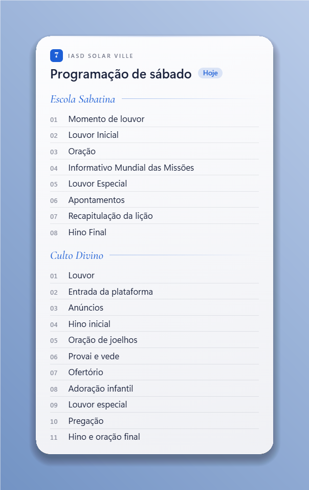
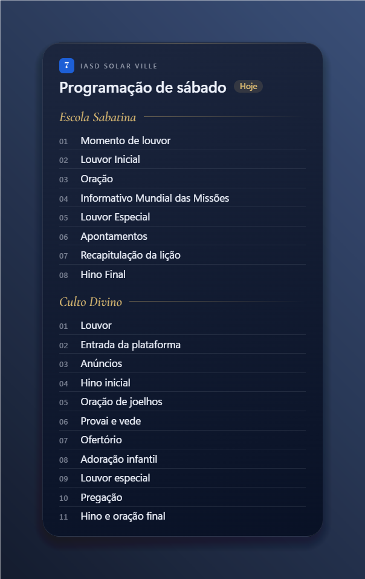
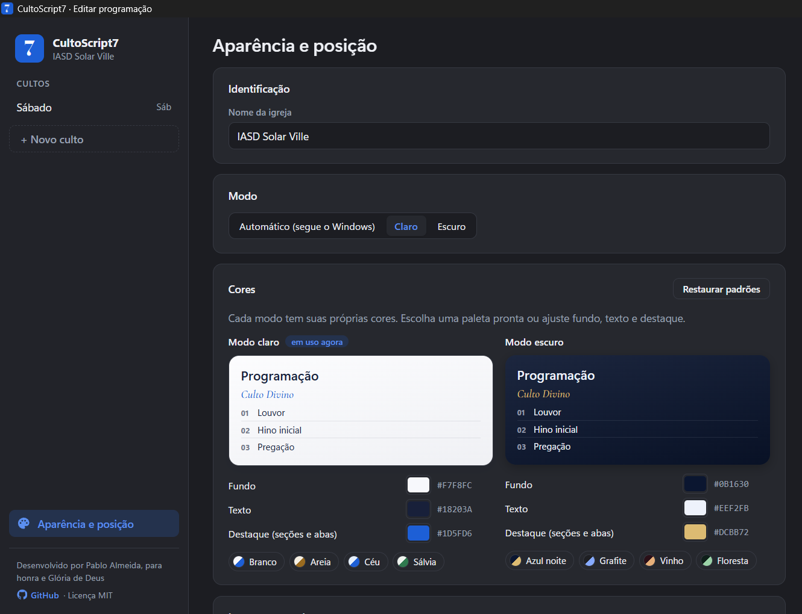

O que ele faz
O editor

Como instalar
Pela Microsoft Store (recomendado): clique em Instalar. As atualizações chegam sozinhas.
Pelo GitHub:
- Baixe o CultoScript7-Setup.exe na página de downloads.
- Abra o arquivo e siga os passos do instalador.
- Personalize a programação no editor. O widget passa a iniciar junto com o Windows.
No download pelo GitHub, se o Windows mostrar “O Windows protegeu o computador”, clique em Mais informações → Executar assim mesmo. Isso não acontece na Microsoft Store.
Perguntas frequentes
O CultoScript7 é gratuito?
Sim. É gratuito, sem anúncios e de código aberto (licença MIT).
Funciona sem internet?
Sim. Funciona totalmente offline, sem conta e sem coletar dados.
Serve para qualquer igreja?
Sim. Ele vem com uma programação de sábado de exemplo, mas qualquer igreja pode trocar o nome, editar as etapas e criar cultos para outros dias da semana.
Em quais versões do Windows funciona?
No Windows 10 e no Windows 11, em computadores de 64 bits.
Como levar a programação para outro computador?
Em Configurações, use Exportar cultos para salvar um arquivo .json e, no outro computador, Importar cultos.
Privacidade
O CultoScript7 não coleta nem envia nenhuma informação. Tudo fica salvo apenas no seu computador.
Se o computador não tiver o Microsoft Edge WebView2, o instalador do GitHub o baixa da Microsoft, conforme a declaração de privacidade da Microsoft.